| 表記 |
LaTeX |
意味 |
例 |
.png) |
\mathcal{N}(\mu, \sigma^2) |
正規分布
ガウス分布
Normal distribution
Gaussian distribution
平均μ, 分散Σ^2の連続分布
自然界や誤差の分布
カール・ガウス(Carl Gauss)の分布
|
.png)
.png)
|
.png) |
\mathrm{LogNormal}(\mu, \sigma^2) |
対数正規分布
Log-normal distribution
対数が正規分布に従う連続分布
主に正の値を取る現象の分布
確率変数Xの対数log(X)が正規分布N(μ, σ²)に従う
株価のモデルに利用される分布
所得のモデルに利用される分布
生物体サイズのモデルに利用される分布
寿命のモデルに利用される分布
平均・分散はパラメータμ, σ²で決まる
|
.png)
.png)
|
.png) |
U(a, b) |
一様分布
均等分布
Uniform distribution
区間[a, b]内での同じ確率の分布
乱数生成や理論的検証の分布
|
.png)
.png)
|
.png) |
\mathrm{Exp}(\lambda) |
指数分布
Exponential distribution
イベント間の待ち時間の分布
λは発生率
|
.png)
.png)
|
| — |
Sub-Exponential |
サブ指数分布
Sub-Exponential Distribution
大きく外れる確率が指数関数的に減少する性質をもつ確率分布の総称
サブガウス分布の拡張概念として知られる分布族
サブガウス分布よりも尾が重いが、ポリノミアルテール（多項式的なテール）よりは尾が軽い分布
ポリノミアル（polynomial）は多項式のこと
ポリノミアルテールはサブガウス分布の尾より重い尾の事
ポリノミアルテールはサブ指数分布の尾より重い尾の事
ポリノミアルテールはパレート分布、コーシー分布、t分布の事
サブ指数分布はポアソン分布・幾何分布・指数分布・ワイブル分布・パレート分布・ボルツマン分布・ギブス分布・カノニカル分布が該当
厳密には分布族で、個別分布ではない
|
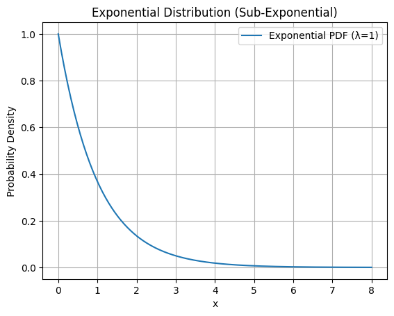
|
.png) |
\mathrm{Gamma}(\alpha, \beta) |
ガンマ分布
Gamma distribution
ガンマ関数(階乗の一般化)を元にする分布
連続正の変数の分布
待ち行列の分布
ベイズ推定の分布
|
.png)
.png)
|
| — |
Sub-Gamma |
サブガンマ分布
Sub-Gamma Distribution
ガンマ分布の尾の重さを一般化した確率分布の総称
ガウス分布よりも平均から大きく離れた値が出やすい性質をもつ確率分布の総称
サブガウス分布の拡張として知られる確率分布の総称
ガンマ分布に似た尾の重さを持つ分布を一般的に表す数学的なクラス
ガンマ分布に似た端っこの重さを持つ分布を一般的に表す数学的なクラス
一様分布が該当
指数分布が該当
ガンマ分布が該当
カイ二乗分布が該当
ベータ分布が該当
ラプラス分布が該当
ロジスティック分布が該当
t分布が該当
ワイブル分布が該当
厳密には分布族で、個別分布ではない
|
aaaa.png)
.png)
|
|
\chi^2(k) |
カイ二乗分布
カイ二乗型分布
カイ二乗法の分布
χ²分布
χ2乗分布
Chi-square distribution
自由度kの独立な標準正規分布の二乗和の分布
統計検定の分布
適合度検定の分布
分散分析の分布
カール・ピアソン(Karl Pearson)の分布
|
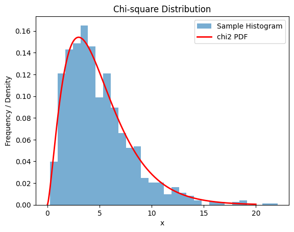
|
|
F(d_1, d_2) |
フィッシャー分布
F 分布
F 統計量
Fisher–Snedecor distribution
F distribution
自由度 d_1, d_2 をパラメータに持つ連続分布
2つの独立なカイ二乗分布の比を表す分布
2つの独立なカイ二乗分布の比で定義される分布
右裾が重い非対称な形状
ロナルド・フィッシャー(Ronald Fisher)とジョージ・スネデカー(George Snedecor) の分布
|
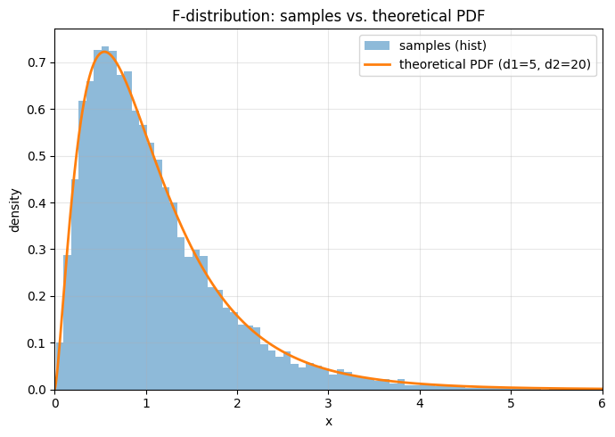
|
.png) |
\mathrm{Beta}(\alpha, \beta) |
ベータ分布
Beta distribution
ベータ関数(積分の一般化)を元にする分布
0～1区間での確率の事前分布
ベイズ推定の分布
|
.png)
|
.png) |
\mathcal{N}(\mu, \Sigma) |
多変量正規分布
Multivariate Gaussian distribution
平均ベクトルμ、共分散行列Σの分布
多次元データの分布
|
.png)
.png)
|
|
\mathcal{W}_p(\nu, \Sigma) |
ウィシャート分布
Wishart distribution
p次元の対称正定値行列（SPD）上の連続分布
p次元は行列の行と列の数を表す
p次元は行列の次元を表す
対称行列はSymmetric Matrix
正定値行列はPositive Definite Matrix (PD）
対称正定値行列はSymmetric Positive Definite Matrix (SPD）
多変量正規分布の標本共分散行列が従う分布
自由度 ν とスケール行列 Σ をパラメータに持つ
期待値は E[W] = νΣ
p=1 の場合はカイ二乗分布になる
ベイズ推定の事前分布として利用される分布
多次元のばらつきの構造を行列でモデル化したいときに利用される分布
John Wishartの分布
|
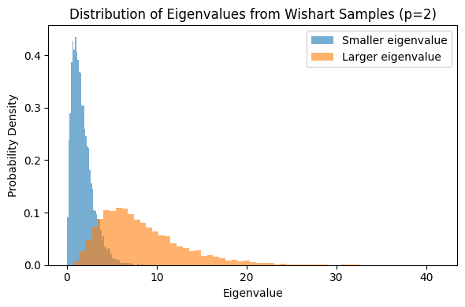
|
|
\mathrm{vM}(\mu,\kappa) |
von Mises 分布
フォン・ミーゼス分布
von Mises distribution
円周正規分布
circular normal distribution
角度（円周）上の連続分布
位置（平均角）μ と、集中度κ をパラメータに持つ分布
κはサンプルの集中度から推定される
κ=0 で一様分布、κが大きいほど μ付近に集中する分布
κ=∞ で通常の正規分布に近似する分布
規格化定数に修正ベッセル関数を用いる分布
修正ベッセル関数は通常のベッセル関数を虚数引数に拡張した特殊関数
ベッセル関数は振動する形を持ち、波動現象に登場する関数
リヒャルト・フォン・ミーゼス (Richard von Mises) の分布
|
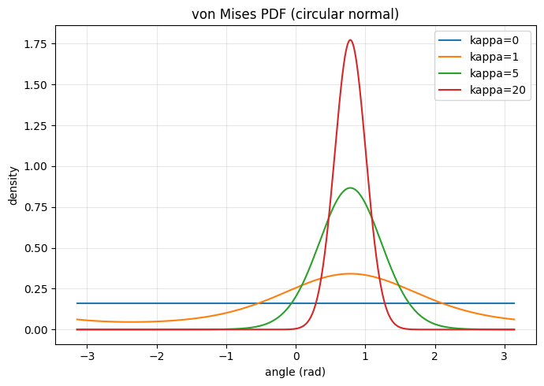
|
|
|
\mathrm{vMF}_p(\mu,\kappa) |
von Mises–Fisher 分布
vMF分布
von Mises–Fisher distribution
vMF distribution
von Mises 分布を高次元球面に拡張した分布
Fisher 分布の1次元円上に von Mises 分布を対応づけた分布
Fisher 分布の低次元版上に von Mises 分布を対応づけた分布
von Mises 分布に Fisher 分布を高次元に一般化して組み合わせた分布
Fisher 分布に von Mises 分布を1次元円上の特別な場合として組み込んだ分布
単位球面 Sp-1（ノルム1のベクトル）上の連続分布
平均方向ベクトル μ と集中度 κ で決まる分布
Richard von Mises と Ronald Fisher の分布
|
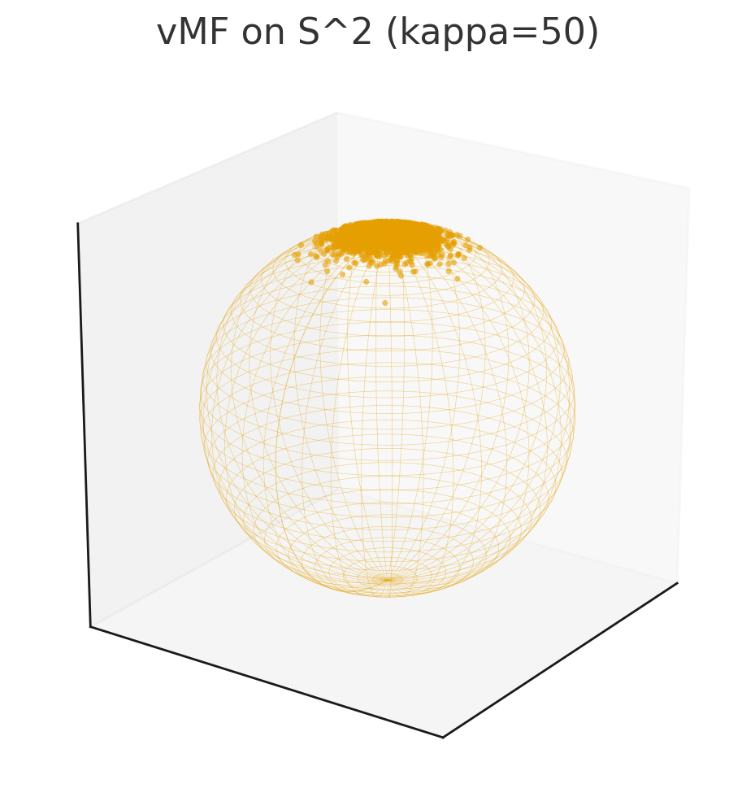
|
.png) |
\mathrm{Dir}(\alpha_1, ..., \alpha_K) |
ディリクレ分布
Dirichlet distribution
多項分布の事前分布
トピックモデルの分布
ピーター・ディリクレ(Peter Dirichlet)の分布
|
.png)
.png)
|
.png) |
\mathrm{Laplace}(\mu, b) |
ラプラス分布
Laplace distribution
尖った形状の分布
尖度が高い分布
kurtosisが高い分布
カータシスが高い分布
裾が重い分布
裾が平たい分布
信号処理の分布
独立成分分析の分布
ピエール・ラプラス(Pierre Laplace)の分布
|
.png)
.png)
|
.png) |
\mathrm{Logistic}(\mu, s) |
ロジスティック分布
Logistic distribution
ロジスティック回帰モデルのシグモイド関数由来の分布
確率変数が-∞から+∞まで取りうる連続分布
耐久性解析の分布
ロジスティック回帰の分布
|
.png)
.png)
|
.png) |
t(\nu) |
t分布
スチューデントのt分布
t-distribution
t distribution
Student’s t-distribution
Student’s t distribution
小サンプルの平均値分布
小標本の平均値の分布
外れ値に強い分布
統計検定の分布
回帰分析の信頼区間の分布
t値(2つのグループ間の違いの値)の分布
ウィリアム・ゴセット(William Gosset)の分布
|
.png)
.png)
|
.png) |
\mathrm{Cauchy}(x_0, \gamma) |
コーシー分布
Cauchy distribution
ローレンツ分布
Lorentz distribution
極端な値が現れやすい特徴を持つ分布
外れ値が現れやすい特徴を持つ分布
重い尾を持つ分布
中央値や平均が定義できない特異な分布
位置母数x₀、スケール母数γの連続分布
確率変数が-∞から+∞まで連続的にとる分布
物理学の共鳴現象や統計的外れ値モデルなどで利用される分布
ヘンドリック・ローレンツ（Hendrik Lorentz）の分布
オーギュスタン・コーシー（Augustin-Louis Cauchy）の分布
|
.png)
.png)
|
|
|
\mathrm{GEV}(\mu,\sigma,\xi) |
極値分布族
Extreme Value Family
一般化極値分布
Generalized Extreme Value (GEV)
独立同分布データ列の最大値/最小値の極限分布を記述する分布族
独立同分布（i.i.d.）データ列の最大値／最小値の極限分布を記述する分布族
独立同分布はi.i.d.のこと
i.i.d.はIndependent and Identically Distributed
i.i.d.は離散型でも連続型でも使える確率分布
i.i.d.は確率変数の列が、それぞれ他の確率変数と同じ確率分布を持ち、それぞれ互いに独立している場合
i.i.d.はサイコロの出目（離散的なi.i.d.）
i.i.d.はコイン投げの結果（離散的なi.i.d.）
i.i.d.は身長データ（連続的なi.i.d.）
i.i.d.は待ち時間データ（連続的なi.i.d.）
一般化極値分布（GEV）は位置母数 μ, 尺度母数 σ, 形状母数 ξ で定義
形状母数 ξ により3型に分岐：
・ξ=0：ガンベル分布（Gumbel, Type I／指数型テール）
・ξ>0：フレーシェ分布（Fréchet, Type II／重い尾）
・ξ<0：ワイブル分布（Weibull, Type III／上限あり）
|
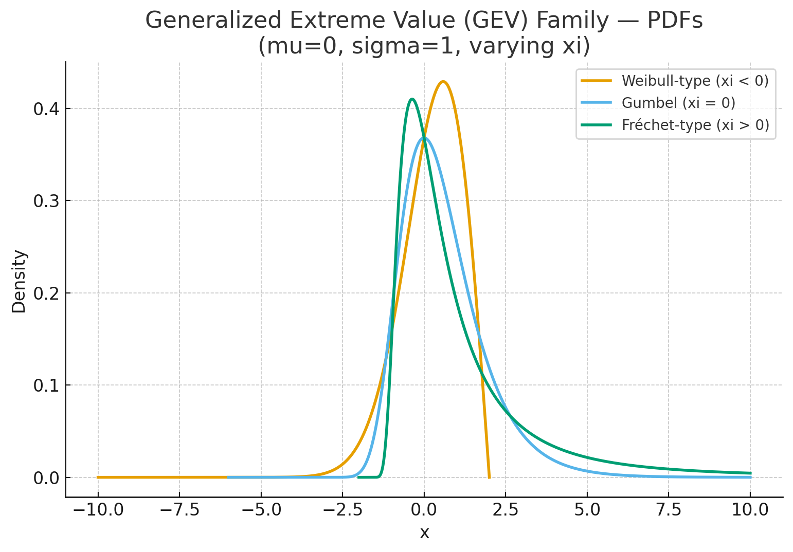
|
|
|
\mathrm{Gumbel}(\mu, \beta) |
ガンベル分布
Gumbel distribution
極値分布I型
Extreme Value Type I
位置母数 μ, 尺度母数 σ, 形状母数 ξ=0 の分布
独立同分布データの最大値（または最小値）をモデル化／近似する分布
独立同分布はi.i.d.のこと
i.i.d.はIndependent and Identically Distributed
i.i.d.は離散型でも連続型でも使える確率分布
i.i.d.は確率変数の列が、それぞれ他の確率変数と同じ確率分布を持ち、それぞれ互いに独立している場合
i.i.d.はサイコロの出目（離散的なi.i.d.）
i.i.d.はコイン投げの結果（離散的なi.i.d.）
i.i.d.は身長データ（連続的なi.i.d.）
i.i.d.は待ち時間データ（連続的なi.i.d.）
指数型テールをもつ母集団の最大値の極限分布
エミール・ガンベル(Emil Gumbel)の分布
|
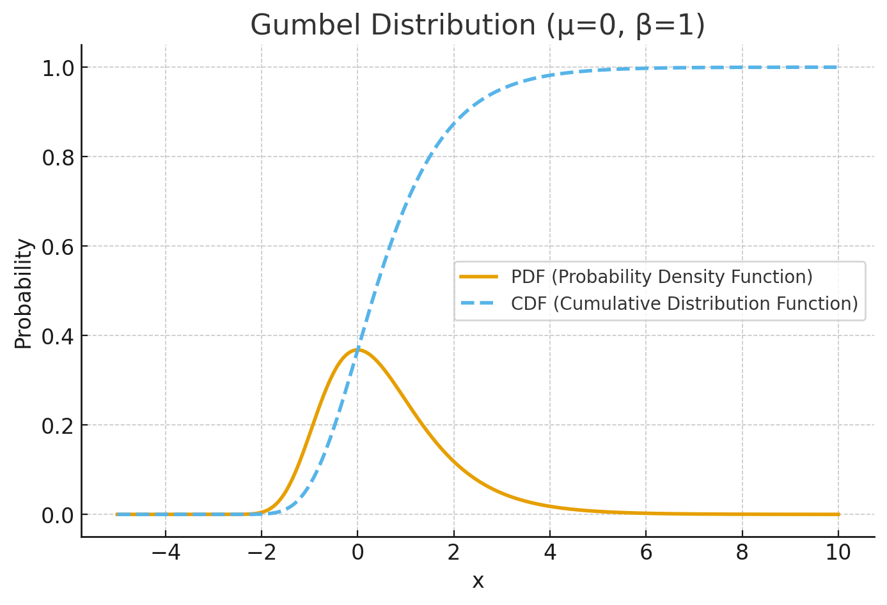
|
|
m" />
|
\mathrm{Fr\acute{e}chet}(\alpha, s, m) |
フレーシェ分布
フレシェ分布
Fréchet distribution
極値分布Ⅱ型
Extreme Value Type Ⅱ
位置母数 μ, 尺度母数 σ, 形状母数 ξ>0 の分布
独立同分布データの最大値（または最小値）をモデル化／近似する分布
独立同分布はi.i.d.のこと
i.i.d.はIndependent and Identically Distributed
i.i.d.は離散型でも連続型でも使える確率分布
i.i.d.は確率変数の列が、それぞれ他の確率変数と同じ確率分布を持ち、それぞれ互いに独立している場合
i.i.d.はサイコロの出目（離散的なi.i.d.）
i.i.d.はコイン投げの結果（離散的なi.i.d.）
i.i.d.は身長データ（連続的なi.i.d.）
i.i.d.は待ち時間データ（連続的なi.i.d.）
独立同分布データの最大値の極限分布の一つ
尾が非常に重い（heavy tail）分布で、大きな値が出やすい特徴を持つ
パレート分布と同様にポリノミアルテールを持つ
指数型母集団の「重い尾」ケースを表す代表的な分布
モーリス・フレーシェ（Maurice Fréchet）の分布
|
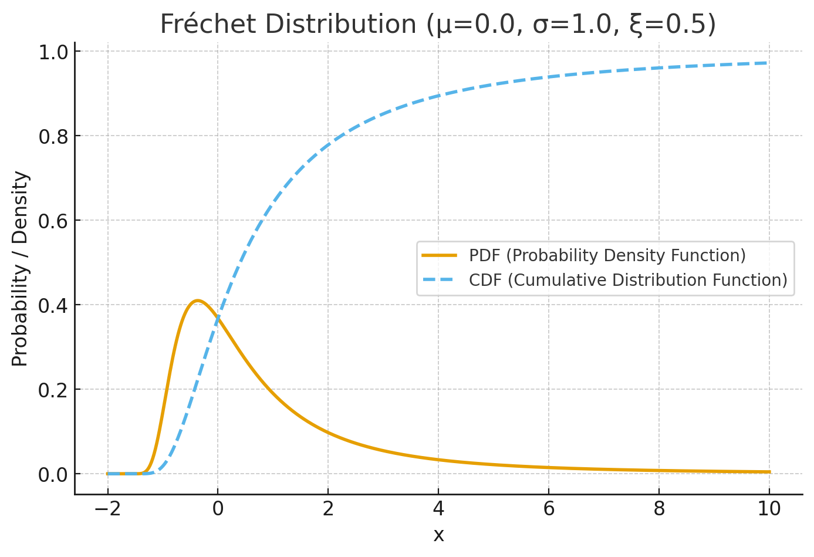
|
.png) |
\mathrm{Weibull}(k, \lambda) |
ワイブル分布
Weibull distribution
極値分布Ⅲ型
Extreme Value Type Ⅲ
位置母数 μ, 尺度母数 σ, 形状母数 ξ<0 の分布
独立同分布データの最大値（または最小値）をモデル化／近似する分布
独立同分布はi.i.d.のこと
i.i.d.はIndependent and Identically Distributed
i.i.d.は離散型でも連続型でも使える確率分布
i.i.d.は確率変数の列が、それぞれ他の確率変数と同じ確率分布を持ち、それぞれ互いに独立している場合
i.i.d.はサイコロの出目（離散的なi.i.d.）
i.i.d.はコイン投げの結果（離散的なi.i.d.）
i.i.d.は身長データ（連続的なi.i.d.）
i.i.d.は待ち時間データ（連続的なi.i.d.）
信頼性工学の分布
寿命の分布
形状パラメータkの分布
形状母数kの分布
ウォルドマー・ワイブル(Waloddi Weibull)の分布
|
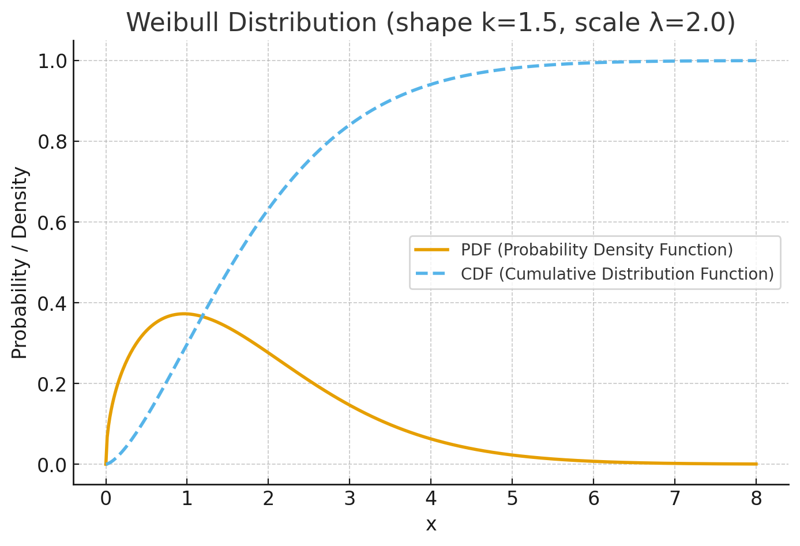
.png)
|
|
\mathrm{Pareto}(x_m, \alpha) |
パレート分布
Pareto distribution
ポリノミアルテールをもつ代表的な分布
ポリノミアル（polynomial）は多項式のこと
ポリノミアルテールはサブガウス分布の尾より重い尾の事
ポリノミアルテールはサブ指数分布の尾より重い尾の事
ポリノミアルテールはパレート分布、コーシー分布、t分布の事
所得・都市人口・ファイルサイズ分布など実社会のごく一部が非常に大きい現象で現れる分布
ヴィルフレド・パレート(Vilfredo Pareto)の分布
|
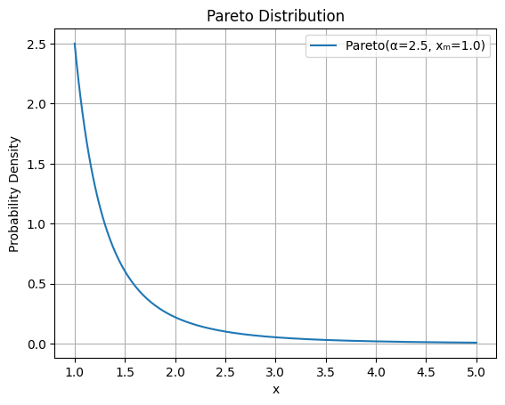
|
|
p_i = \frac{e^{-E_i / k_B T}}{Z} |
ボルツマン分布
Boltzmann distribution
ギブス分布
Gibbs distribution
カノニカル分布
Canonical distribution
エネルギー状態Eiを持つ粒子が、温度Tの熱平衡状態でその状態にある確率を表す分布
状態の確率はエネルギーが低いほど高く、エネルギーが高いほど指数的に減少
統計力学・熱力学・確率論で広く使われる分布
Zは分配関数（partition function）で、全確率の正規化に使う
kBはボルツマン定数
気体分子の速度分布
エネルギー準位の占有確率となる分布
機械学習のソフトマックス関数の基礎となる分布
ルートヴィッヒ・ボルツマン(Ludwig Boltzmann)の分布
ジョサイア・ギブス(Josiah Gibbs)の分布
|
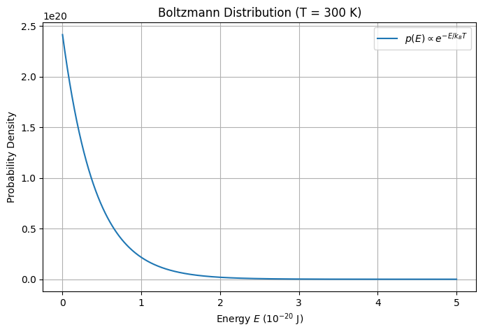
|
.png) |
\sum_k \pi_k \mathcal{N}(\mu_k, \sigma_k^2) |
混合ガウス分布
Gaussian Mixture Model
GMM
複数のガウス分布の重ね合わせ
分類の分布
クラスタリングの分布
|
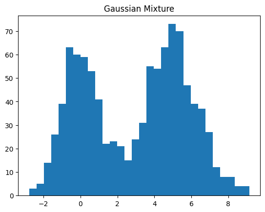
.png)
|
.png) |
\sum_k \pi_k f_k(x) |
混合分布
重み付き和分布
Mixture distribution
複数の分布f_k(x)を重み(π_k)で足し合わせた分布
クラスタリングの分布
生成モデルの分布
|
.png)
.png)
|
.png)
.png)
.png)
.png)
.png)
.png)
.png)
.png)
.png)
.png)
.png)
.png)
.png)
.png)
.png)
.png)
.png)
.png)
.png)
.png)
.png)
aaaa.png)
.png)
aaaa.png)
.png)
.png)
aaaa.png)
.png)
.png)
.png)
.png)
.png)
.png)
.png)
.png)
aaaa.png)
.png)